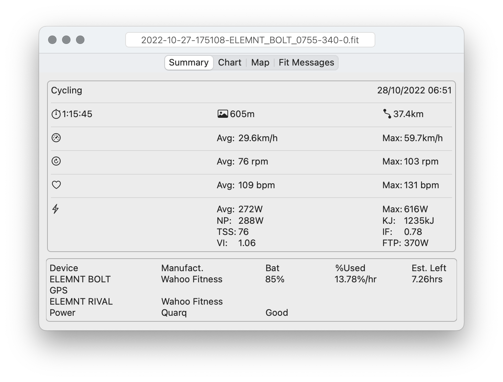
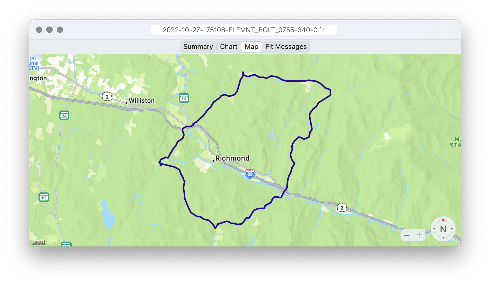
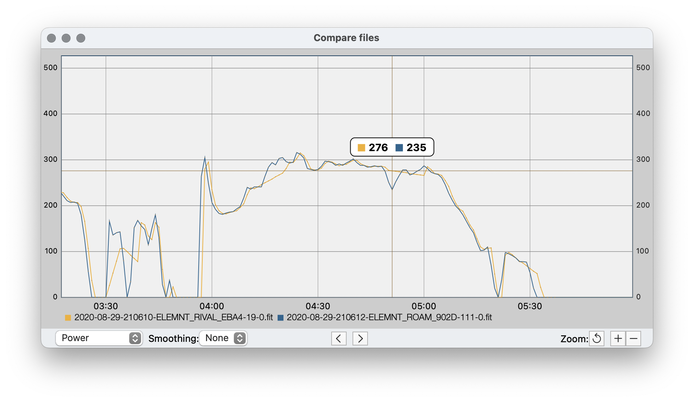
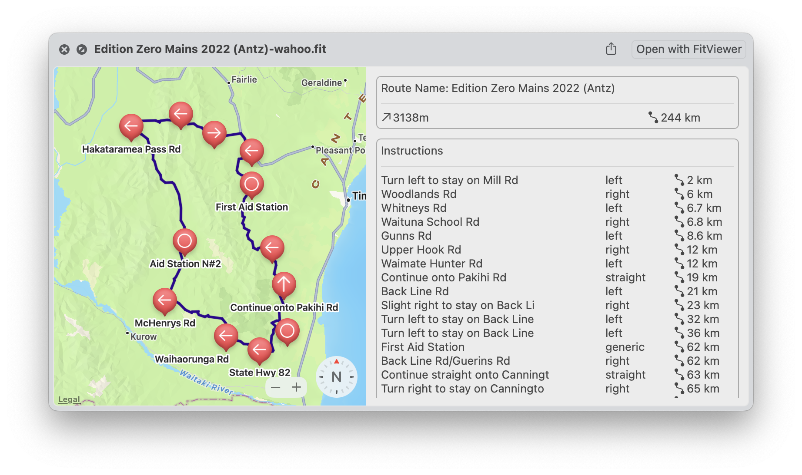

View activity and route files
See a summary of your activity including:
Overall activity data and averages,
laps,
sensors
Route turn by turn directions (if they exist).
Chart View
See charts for power, heartrate, cadence, speed and altitude
Zoom in and select data points

Map View
View map of activity or route.
For a route see turn by turn points.

Compare files view
Select two or more activity files.
Compare either power, hr, cadence or gps accuracy.
zoom into a specific part of the activities.
Apply somotthing to the data.

Finder Quicklook
See map and summary of activity and route fit files in Finder.